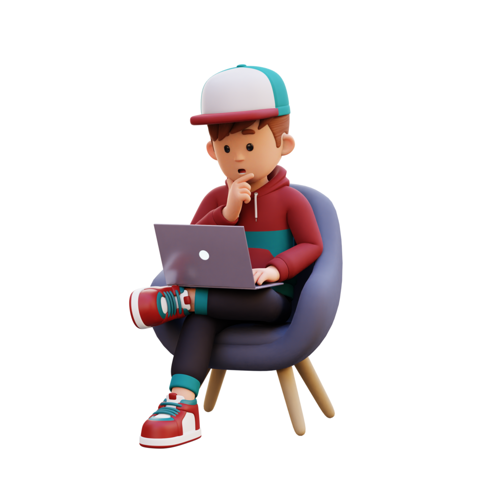

I am an aspiring Full-Stack Web Developer currently based in
Bengaluru, associated with Masai School. Holding a B.Sc degree in
Mathematics (Honours) from Magadh University, Bodh Gaya, Bihar, I am
dedicated to staying at the forefront of technology within the realm
of Web Development. My commitment to continuous learning is evident
through my proficiency in the MERN stack, data structures, algorithms,
and soft skills, all acquired during my tenure at Masai School. Driven
by a passion for innovation, I consistently seek opportunities to
explore and adapt to emerging technologies. My hunger for knowledge
has intensified throughout my development journey, motivating me to
regularly upgrade my skills. With a solid foundation in coding and a
keen understanding of the importance of continuous improvement, I aim
to contribute significantly to organizational growth. Beyond the world
of coding, my diverse interests include singing, playing cricket, and
exploring new places. As a multifaceted individual, I am not only
poised to centralize my skills for organizational enhancement but also
strive for personal and professional growth in my burgeoning career
